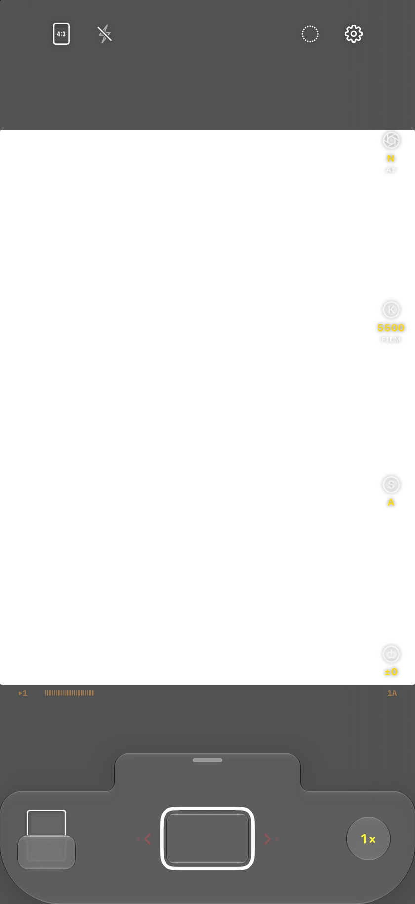
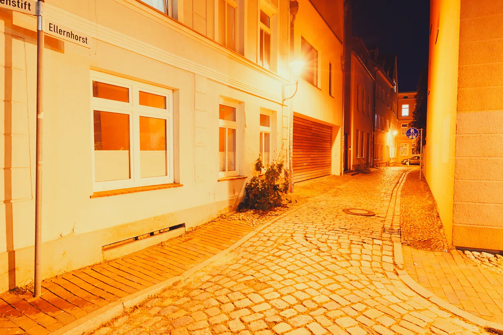
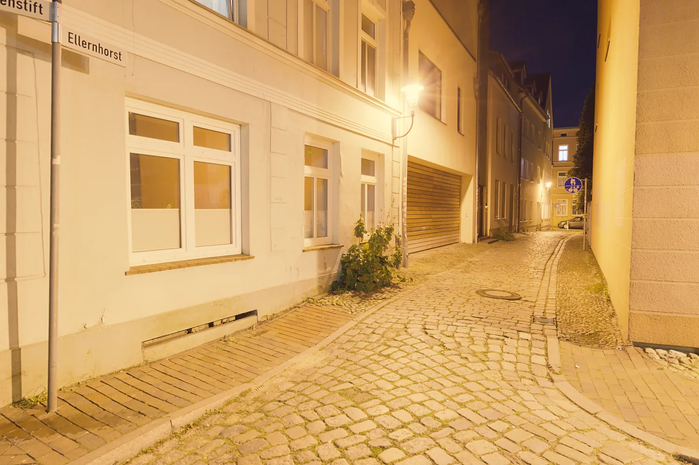
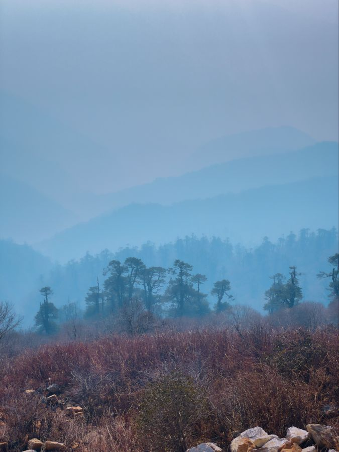
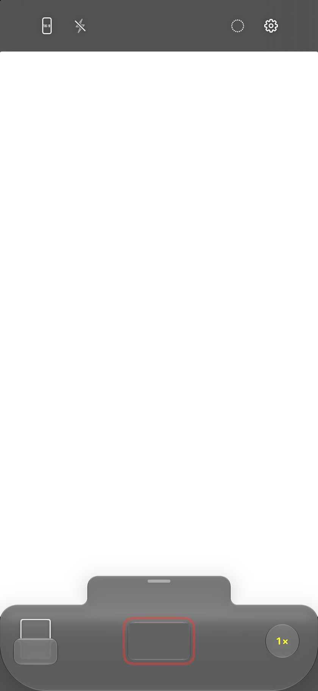
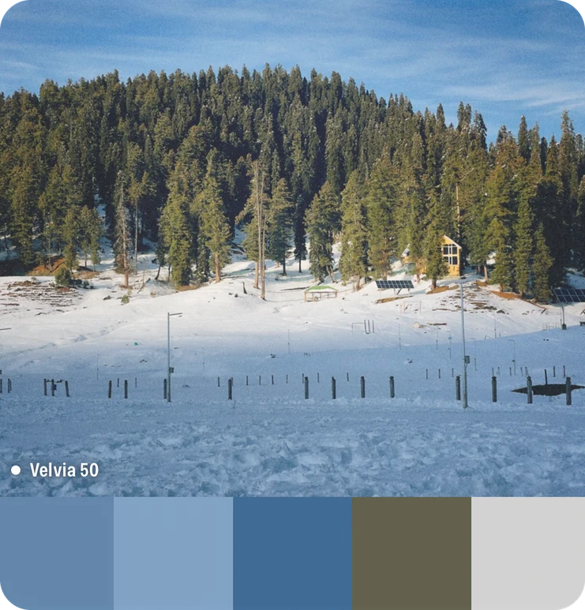
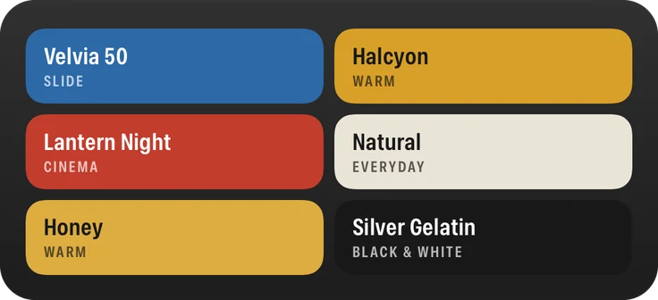
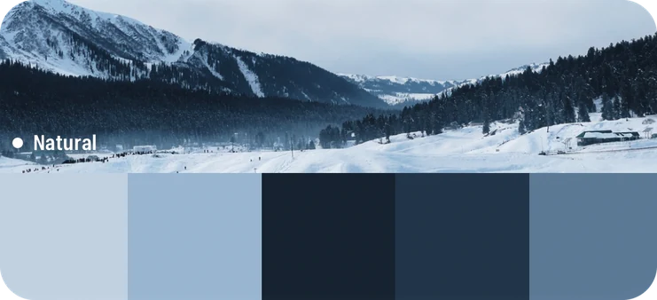
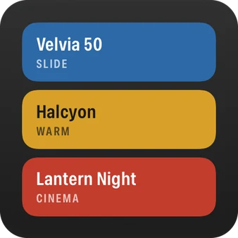
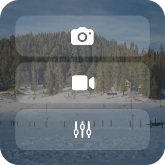

FILMCAP · A FILM CAMERA FOR IPHONE
Some moments ask to be kept.
FilmCap takes a true RAW photo, with the phone’s processing and AI turned off, and develops it through the film you choose. What you see is what you keep.


FILMCAP · A FILM CAMERA FOR IPHONE
FilmCap takes a true RAW photo, with the phone’s processing and AI turned off, and develops it through the film you choose. What you see is what you keep.
01A · 8:14 AM
The good corner table. Light coming in sideways, the cup still too hot to hold. Nothing is happening, and that’s the point. You won’t remember the exact colours. Film will.
Swipe across the picture to try another film. Honey suits mornings.
02A · 6:40 PM
Everyone stops talking at the same time. The water holds the sky for a while, and then it doesn’t. Halcyon keeps the evening soft and warm, the way it felt.
Look around. Tap the shutter when it feels right.
03A · 11:52 PM
Nobody wants the night to end, so you walk. Streetlamps on old stone, a laugh that carries down the lane. Lantern Night is tungsten cinema film, made for nights like this.
The photos you keep here hang in the darkroom below.
04A · DEVELOPED, NOT DECIDED
Most phone photos are finished before you see them: sharpened, brightened, smoothed, decided. FilmCap turns that off. It takes a RAW photo, the light exactly as the sensor caught it, and develops it on your iPhone through the film you choose.


05A · THE ROLL
These twelve come loaded on a new camera, one of every kind. There are 150 films in all, from classic stocks to black and white, and you can make your own. Tap one to load it in the viewfinder.
The viewfinder and the films here show each film’s colour on a 360° photo. In FilmCap, every film also has its grain, glow and halation, on your own RAW photos.
06A · THE DARKROOM
Your photos wait in the darkroom, to look at whenever you like. Lift one into the developer to change its film, its light, its colour and grain, or place a new lamp in a scene you already took.



Photos by the developer, taken with FilmCap.

07A · VIDEO
Every film works on video too. Swipe the picture: the same films, on a clip that’s moving. Shoot Log and ProRes when you’d rather grade it yourself, and dolly zoom and forced perspective for the shots you’ve only seen in films.
Clip: “Sunset in Lake Toba” by Nafisathallah, CC BY 4.0, through FilmCap’s films.

08A · STICKERS
Your first photo. A photo of someone you love. One taken after midnight. A horizon dead level. FilmCap notices, and keeps a sticker for each.





09A · HOME SCREEN
Widgets for your newest photo and its colours, the films you used lately, and one tap to a photo, a video or the editor.
Photos and videos are developed on your iPhone and saved to your Photos library. FilmCap sends none of them anywhere. Privacy Policy